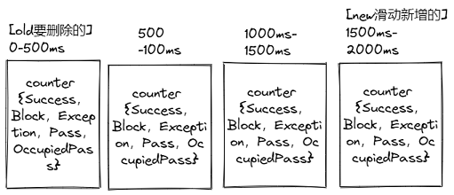

Sentinel #
限流 API [4] #
- 定义资源 资源：可以是任何东西，一个服务，服务里的方法，甚至是一段代码。
try (Entry entry = SphU.entry("HelloWorld")) {
// Your business logic here.
System.out.println("hello world");
} catch (BlockException e) {
// Handle rejected request.
e.printStackTrace();
}
// try-with-resources auto exit
@SentinelResource("HelloWorld")
public void helloWorld() {
// 资源中的逻辑
System.out.println("hello world");
}
- 定义规则 规则：Sentinel 支持以下几种规则： 流量控制规则、熔断降级规则、系统保护规则、来源访问控制规则和 热点参数规则。
private void initSystemRule() {
List<SystemRule> rules = new ArrayList<>();
SystemRule rule = new SystemRule(); // 规则
rule.setHighestSystemLoad(10);
rules.add(rule);
SystemRuleManager.loadRules(rules);
}
FlowRuleManager.loadRules(List<FlowRule> rules); // 流控规则
DegradeRuleManager.loadRules(List<DegradeRule> rules); // 降级规则
SystemRuleManager.loadRules(List<SystemRule> rules); // 系统规则
AuthorityRuleManager.loadRules(List<AuthorityRule> rules); // 授权规则
限流 类型 [2] #
- 直接失败 [滑动时间窗口]
- Warmup 预热 [令牌桶算法]
- 限流排队 [漏桶算法]
分布式限流 [1] #
滑动窗口 [2] #

核心代码 LeapArray.java
/*
* Get bucket item at given time from the array.
*
* (1) Bucket is absent, then just create a new bucket and CAS update to circular array.
* (2) Bucket is up-to-date, then just return the bucket.
* (3) Bucket is deprecated, then reset current bucket.
*/
while (true) {
WindowWrap<T> old = array.get(idx);
if (old == null) { /// 初始化一个窗口
/*
* B0 B1 B2 NULL B4
* ||_______|_______|_______|_______|_______||___
* 200 400 600 800 1000 1200 timestamp
* ^
* time=888
* bucket is empty, so create new and update
*
* If the old bucket is absent, then we create a new bucket at {@code windowStart},
* then try to update circular array via a CAS operation. Only one thread can
* succeed to update, while other threads yield its time slice.
*/
WindowWrap<T> window = new WindowWrap<T>(windowLengthInMs, windowStart, newEmptyBucket(timeMillis));
if (array.compareAndSet(idx, null, window)) {
// Successfully updated, return the created bucket.
return window;
} else {
// Contention failed, the thread will yield its time slice to wait for bucket available.
Thread.yield();
}
} else if (windowStart == old.windowStart()) { /// 返回老的窗口
/*
* B0 B1 B2 B3 B4
* ||_______|_______|_______|_______|_______||___
* 200 400 600 800 1000 1200 timestamp
* ^
* time=888
* startTime of Bucket 3: 800, so it's up-to-date
*
* If current {@code windowStart} is equal to the start timestamp of old bucket,
* that means the time is within the bucket, so directly return the bucket.
*/
return old;
} else if (windowStart > old.windowStart()) { /// 滚动: 重置老的窗口, 增加新的窗口
/*
* (old)
* B0 B1 B2 NULL B4
* |_______||_______|_______|_______|_______|_______||___
* ... 1200 1400 1600 1800 2000 2200 timestamp
* ^
* time=1676
* startTime of Bucket 2: 400, deprecated, should be reset
*
* If the start timestamp of old bucket is behind provided time, that means
* the bucket is deprecated. We have to reset the bucket to current {@code windowStart}.
* Note that the reset and clean-up operations are hard to be atomic,
* so we need a update lock to guarantee the correctness of bucket update.
*
* The update lock is conditional (tiny scope) and will take effect only when
* bucket is deprecated, so in most cases it won't lead to performance loss.
*/
if (updateLock.tryLock()) {
try {
// Successfully get the update lock, now we reset the bucket.
return resetWindowTo(old, windowStart); /// 清零重置old窗口
} finally {
updateLock.unlock();
}
} else {
// Contention failed, the thread will yield its time slice to wait for bucket available.
Thread.yield();
}
} else if (windowStart < old.windowStart()) { /// 时钟回拨
// Should not go through here, as the provided time is already behind.
return new WindowWrap<T>(windowLengthInMs, windowStart, newEmptyBucket(timeMillis));
}
}
}
Sentinel vs. Hystrix vs. resilience4j [3] #
| Sentinel | Hystrix | resilience4j | |
|---|---|---|---|
| 隔离策略 | 信号量隔离（并发线程数限流） | 线程池隔离/信号量隔离 | 信号量隔离 |
| 熔断降级策略 | 基于响应时间、异常比率、异常数等 | 异常比率模式、超时熔断 | 基于异常比率、响应时间 |
| 实时统计实现 | 滑动窗口（LeapArray） | 滑动窗口（基于 RxJava） | Ring Bit Buffer |
| 动态规则配置 | 支持多种配置源 | 支持多种数据源 | 有限支持 |
| 扩展性 | 丰富的 SPI 扩展接口 | 插件的形式 | 接口的形式 |
| 基于注解的支持 | 支持 | 支持 | 支持 |
| 限流 | 基于 QPS，支持基于调用关系的限流 | 有限的支持 | Rate Limiter |
| 集群流量控制 | 支持 | 不支持 | 不支持 |
| 流量整形 | 支持预热模式、匀速排队模式等多种复杂场景 | 不支持 | 简单的 Rate Limiter 模式 |
| 系统自适应保护 | 支持 | 不支持 | 不支持 |
| 控制台 | 提供开箱即用的控制台，可配置规则、查看秒级监控、机器发现等 | 简单的监控查看 | 不提供控制台，可对接其它监控系统 |
| 多语言支持 | Java / C++ | Java | Java |
| 开源社区状态 | 活跃 | 停止维护 | 较活跃 |
参考 #
-
常用限流降级组件对比 Sentinel vs. Hystrix
-
流控降级最佳实践 阿里 未
-
{% post_link ‘ratelimit’ %} self